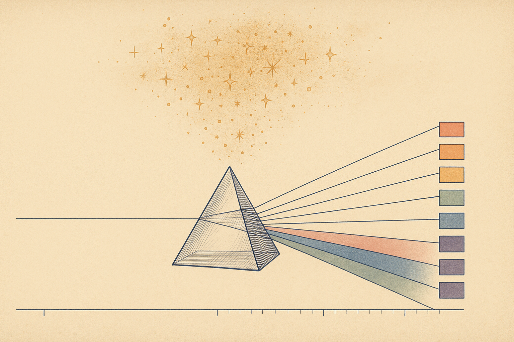
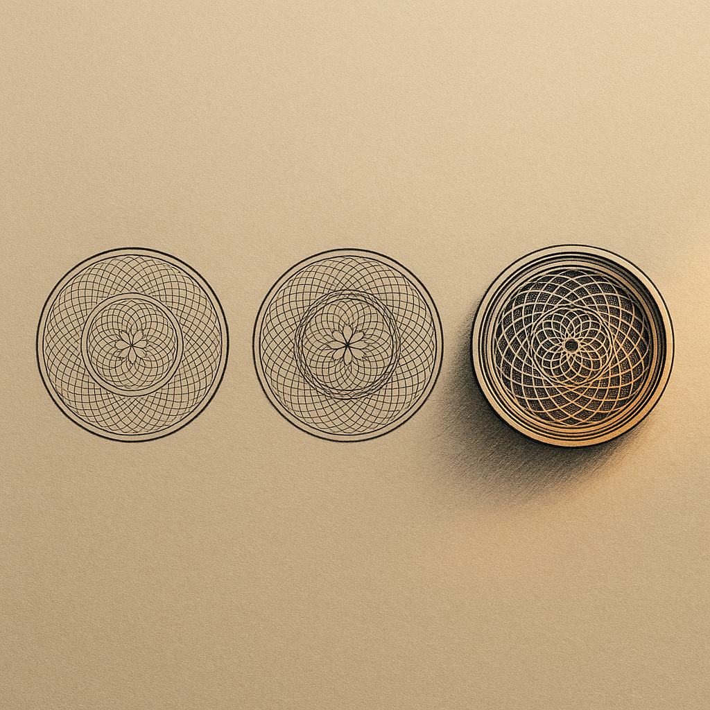
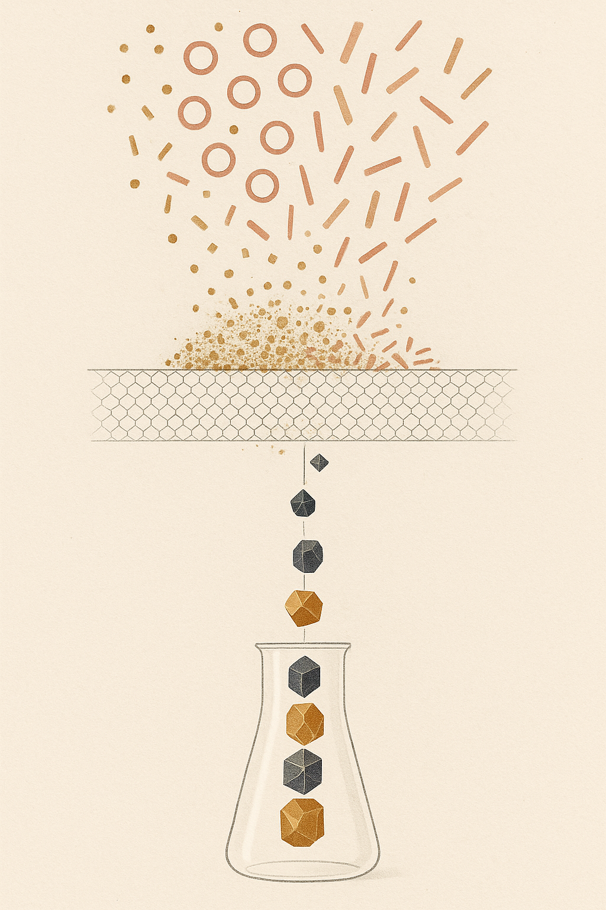

Review below. Reply approve to publish the Facebook post, or tell me edits.

You are three scrolls into a product page for an LED mask. The photos are lovely. And there, lined up like medals, sit the badges: FDA-cleared. Clinically proven. Dermatologist-recommended.
They look like proof. They are mostly decoration.
Here is the uncomfortable pattern behind beauty-device marketing: the badges brands lead with are usually the ones that tell you the least, and the protections that actually cover you as an Australian buyer are almost never mentioned. So let us decode the big three honestly, then replace them with what genuinely matters. Feel free to run every test in this post against our own page. That is rather the point.
Short answer: no. Longer answer: "FDA-cleared" means the United States Food and Drug Administration has given a company permission to market a device in America. For most low-risk beauty devices, that clearance comes through a pathway called substantial equivalence, which means the company showed its device is substantially similar to something already on the market. It is largely a safety review, not a verdict on results.
Two things follow from that. First, cleared is not the same as approved, and neither is a statement that the device will do anything visible for your skin. Second, and this is the part that matters if you live here: FDA clearance has no legal standing in Australia. None. It is a US regulatory status for the US market.
Think of it like a US power plug. It is real. It works perfectly well in an American wall. It does precisely nothing in yours.
> An FDA-cleared badge is a US power plug. Real, and completely inert in an Australian wall.
That is why we do not wave FDA clearance at you on our page. Not because clearance is meaningless everywhere, but because for an Australian buyer it answers a question you did not ask.
Here is the quiet secret: nothing. "Clinically proven" is not a regulated phrase. There is no authority checking whether the words are earned before they go on a box.
For the phrase to mean anything, it needs to name a real study: published, peer-reviewed, and run on that specific device, not on red light in general, and not on a different machine in a laboratory somewhere. If the brand cannot point you to the citation, the phrase is a decoration.
There is genuine published research behind photobiomodulation, the mechanism LED skincare relies on. That research is why devices like ours exist. But "the field has evidence" and "this exact unit was tested" are two very different sentences, and honest brands keep them separate. When you see "clinically proven" with no study attached, read it as "we liked how this sounded."
Often, one person. Sometimes one person who was paid.
"Dermatologist-recommended" can legally describe a single clinician's endorsement. It does not tell you how many were asked, what they compared it against, or whether they have any relationship with the brand. It tells you nothing about the unit that will arrive in your box: not its wavelengths, not its output, not its build quality.
Buyers in 2026 have learned to discount endorsements, and that instinct is healthy. An endorsement is a person's opinion. A spec sheet is a fact about the product. When you have to choose which one to trust, choose the one that can be measured.
Treat them as a fourth badge, because that is what they are. A before-and-after is one of the easiest things in beauty to stage: different lighting, a fresh cleanse, a sharper camera angle, a little editing. None of that is the device doing the work. The photos worth trusting are the boring, consistent ones (same light, same distance, same time of day) shot over weeks, not a flattering pair hand-picked from a hundred. If you cannot see the shooting conditions, you are looking at art direction, not evidence.
Yes, with honest caveats. The mechanism is real and it has a name: photobiomodulation. Stripped of the jargon, certain wavelengths of visible light can gently nudge the skin cells that respond to them, supporting the look of tone and texture over time. There is genuine published research behind the field, which is why red light therapy at home became a real category rather than a passing gimmick.
The caveats matter as much as the mechanism. It is gradual, not instant. It is maintenance, closer to flossing or sunscreen than to a facelift. And "the field has evidence" is not the same sentence as "this exact unit was tested", which is precisely the gap most badges are built to paper over. With consistent use, expect visibly better tone and glow within a week or two, and any change in fine lines much further out, around the 4 to 8 week mark. A brand promising more than that is selling the badge, not the biology.
Now for the questions that actually protect you here. The first: is the device sold as a cosmetic device or a therapeutic device?
In Australia, a device making therapeutic claims (treating a medical condition, for instance) generally needs to be included on the Australian Register of Therapeutic Goods, the ARTG, which is overseen by the TGA. A cosmetic device makes appearance-based claims only: how skin looks, its visible tone, its glow.
An honest brand tells you plainly which one it is selling. So, plainly: the Redermis mask is a cosmetic device. It is designed to support the look of your skin with consistent use. It does not treat medical conditions, and we will not imply that it does. If a brand is vague about this status while its ad copy quietly drifts into medical territory, that vagueness is information.
Here is the strongest protection you have, and the one no badge ever mentions: Australian Consumer Law applies to every product sold to you in Australia, automatically.
Under the ACL's consumer guarantees, anything you buy must be of acceptable quality, fit for the purpose it was sold for, and must match its description. These guarantees cannot be signed away in fine print, cannot be overridden by a "no refunds" sign, and do not depend on the brand's goodwill. If a device fails to meet them, you have rights to a remedy, locally, in your own legal system.
That applies to our masks exactly as it applies to everything else you buy here. We would rather you know that than admire a badge.
If you strip away the medals, three hard specs tell you most of what a badge pretends to:
A brand that publishes its numbers is inviting you to check its work. A brand that publishes badges is asking you not to.
Decode the three badges
Ask for these instead
FDA clearance is a US permission slip with no force in Australia. "Clinically proven" means nothing without a named, published study on that device. "Dermatologist-recommended" can be one opinion. What protects you here is the cosmetic-vs-therapeutic distinction, your non-negotiable rights under Australian Consumer Law, and a spec sheet with real numbers on it.
We are a new brand still earning our reviews, and we are not going to invent any. What we can do is show our numbers and state our status honestly.
One question before you go: which badge nearly got you last time, FDA-cleared, clinically-proven or dermatologist-recommended? Tell me in the comments.
If you want to run this same checklist against us, the mask and the full spec are here: https://redermis.com.au/products/medical-grade-silicone-7-wevelenghts-photon-led-mask-face-and-neck-red-light-therapy-flexible-facial-mask-repair-skin-wireless-use

An FDA-cleared badge on a beauty device sold here is basically a US power plug in an Australian wall. Technically real. Does nothing in your socket.
Quick decode of the three badges you will see everywhere:
FDA-cleared: a US market permission, mostly about safety. It has no standing with an Australian regulator.
"Clinically proven": meaningless unless the brand names a study on that exact device. Usually they cannot.
"Dermatologist-recommended": can legally mean one clinician, sometimes a paid one.
So what actually protects you here? Two things. First, whether the device is sold as a cosmetic or a therapeutic device (therapeutic claims need ARTG listing, cosmetic devices cannot make them). Second, Australian Consumer Law: guarantees come with every order and no fine print can waive them.
That applies to us too. Redermis is a cosmetic device, not a medical one. We are a new brand still earning our reviews, and we will not invent any. ACL rights sit under every order we ship.
Worth saving this for your next skincare purchase.
Which badge nearly talked you into a device? Comment FDA, PROVEN or DERM, whichever one nearly got you.
If you ever want to run this checklist against us, the mask and full spec are here: https://redermis.com.au/products/medical-grade-silicone-7-wevelenghts-photon-led-mask-face-and-neck-red-light-therapy-flexible-facial-mask-repair-skin-wireless-use
#SkincareFacts #RedLightTherapy #AustralianConsumerLaw
IMAGE PROMPT: Editorial fine-line science illustration in the spirit of Scientific American, single iconic centred motif on a warm neutral paper background lit by a soft raking side light that grazes across the surface. Three ornate circular seals sit in a row like assay hallmarks or medallion stamps, each built from concentric guilloche security patterns, nested rings and precise spirograph curves. The first two seals are revealed as hollow decoration: their engraving is thin, flat and superficial, printed onto the surface like a foil sticker, catching the raking light with no shadow, visibly weightless. The third seal is the same diameter but genuinely struck: its interlocking geometric lattices and concentric rings descend through several engraved strata into the substrate, showing true carved depth in a subtle cutaway at its edge, casting fine real shadows into its grooves. The metaphor: only one mark has real structure beneath its surface, the others are decoration. Elegant intaglio engraving texture, hairline linework, restrained warm-neutral ink tones with a single burnished copper accent glowing in the deepest struck grooves. Structured, tactile, forensic and legible. No product, no device, no mask, no people, no faces, no text, no numbers, no logos.

Three badges on beauty-device pages that mean nothing, and one Australian rule that means everything.
Sit with that before your next skincare purchase. Here is the decode.
"FDA-cleared."
That is US permission to sell. It carries no weight in Australia, and it is not proof the device does what the ad says.
"Clinically proven."
Empty unless the brand names the study, on that exact device, with real numbers. "Studies show" about red light in general is not a study of the mask in your cart.
"Dermatologist-recommended."
Often one clinician, sometimes a paid one. It is a testimonial in a lab coat.
So what does protect you here?
Two things, and neither is a badge.
One: know whether the device is cosmetic or therapeutic. A cosmetic device (ours is one) supports how skin looks. It cannot legally claim to treat or cure anything, so any page that promises both is telling on itself.
Two: Australian Consumer Law. Every order comes with consumer guarantees the brand cannot opt out of. If a device is faulty or does not match its description, you have real local recourse, badge or no badge.
Then demand the hard specs: wavelengths in nanometres, LED counts, session time. Ours are on the page in plain sight: 7 colours, 70 face and 33 neck chips, 309 emission points, 10 minutes a day.
The point is not to trust us instead. It is to read every page this way, including ours. We are a new brand still earning our reviews, and we would rather you shop sceptical.
Which badge has fooled you before? Drop it in the comments, and tag someone shopping for an LED mask.
If you want the full spec, the link is in our bio.
#auskincare #australianskincare #skincareaustralia #redlighttherapy #ledlighttherapy #ledmask #skincarefacts #skincareroutine #consumerrights #skincareroutineau #beautydevice #skincaretips
IMAGE PROMPT: Editorial science illustration in the spirit of Scientific American or New Scientist, vertical 4:5 composition, elegant and legible like a textbook figure rather than an abstract blur. A conceptual filtration-and-sorting diagram read top to bottom. From the top of the frame, three separate streams of loose decorative particles pour downward: glittering flecks, hollow open rings and thin confetti-like shards in muted gold, dusty rose and pale bronze. They fall toward a fine geometric sieve rendered as a precise hexagonal lattice mesh spanning the middle third of the frame, drawn in crisp thin linework. Above the mesh the loose glitter piles up, tangles and is caught, held back and rendered slightly diffuse and chaotic, decoration that cannot pass. Below the mesh only a small handful of solid, structured tokens make it through: dense faceted geometric solids in deep charcoal and warm amber, falling in a single clean vertical column into a minimal clear glass vessel at the base drawn in elegant line, where they settle as a small stack of genuinely verified pieces. Strong vertical hierarchy and high contrast between the chaotic caught glitter above and the few solid verified solids below. Warm neutral palette: cream ground, warm greys, amber and soft bronze, one deep charcoal accent. Subtle paper grain, precise linework, faint gravity guide lines, generous negative space. No people, no faces, no products, no devices, no technology, no text, no numbers, no logos.
## Title
FDA-Cleared vs Clinically Proven: What LED Mask & Red Light Therapy Badges Mean in Australia
## Description
Badges are not proof. "FDA-cleared" is a US paperwork status, not an Australian one. "Clinically proven" usually has no study behind it. "Dermatologist-recommended" can mean one dermatologist, once. What actually counts for an LED face mask here: cosmetic vs therapeutic status, your Australian Consumer Law guarantees, and specs stated plainly (ours: 7 colour modes, 309 emission points). Read past the stickers, including ours. Pin this for your next LED mask purchase.
See how we state our own specs, plainly, here: https://redermis.com.au/products/medical-grade-silicone-7-wevelenghts-photon-led-mask-face-and-neck-red-light-therapy-flexible-facial-mask-repair-skin-wireless-use
## Hashtags
#redlighttherapy #ledfacemask #skincaretips #australianskincare #skincarescience
Note: this pin reuses the Instagram image (no separate image is generated for Pinterest).